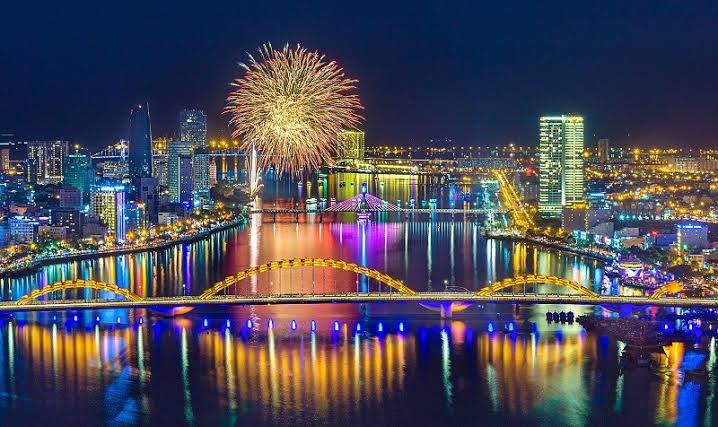

Welcome to Da Nang, one of the most beautiful coastal cities in Vietnam. Da Nang is famous for its stunning beaches, beautiful mountains, modern bridges, and delicious local food. Visitors can enjoy wonderful natural scenery and explore many exciting attractions.
This photo gallery introduces nine amazing destinations and traditional dishes in Da Nang. From My Khe Beach and the Golden Bridge to local specialties such as Mi Quang, Banh Xeo, and Bun Cha Ca, Da Nang offers unforgettable experiences for every traveler.


